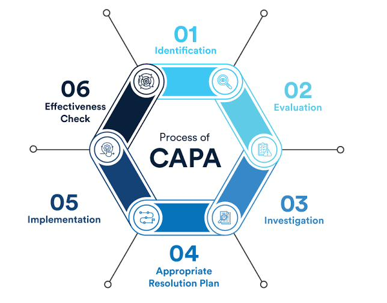
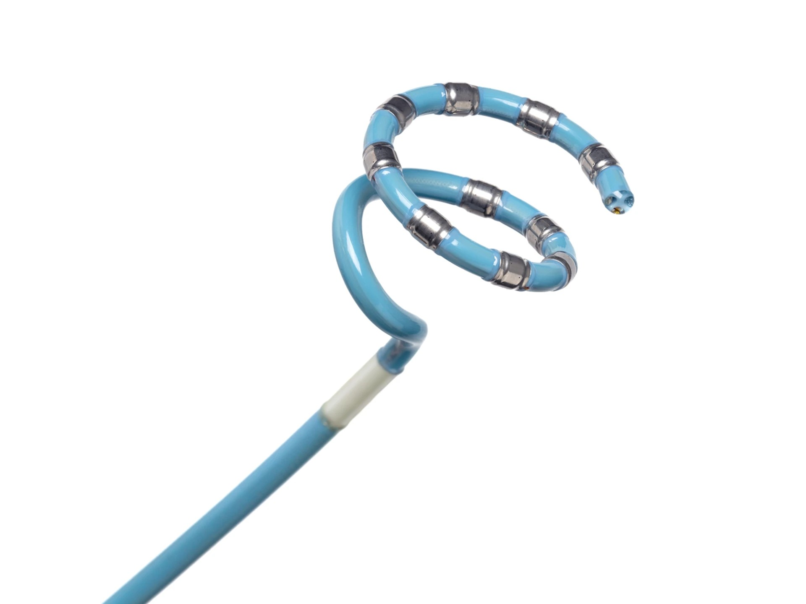
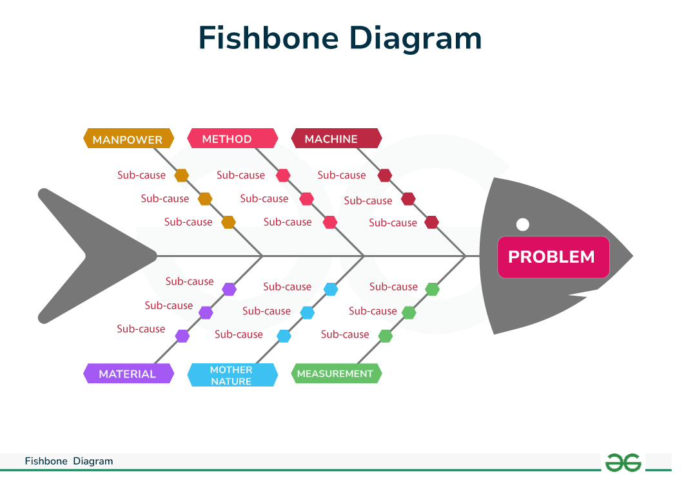

Newly manufactured catheters were being shipped to international markets, where testing identified ethylene oxide (EO) residuals above the permitted limit. Reports were especially common for shipments traveling to more distant countries, and several related complaints resulted in a formal nonconformance.
Excess EO is a patient-safety concern because it can be cytotoxic, contribute to hemolysis, and act as an irritant.
The investigation identified both design and material contributors to the elevated EO residuals. Our task was to develop and implement a corrective and preventive action (CAPA) that addressed the immediate nonconformance and reduced the likelihood of recurrence.
The corrective action adjusted the EO cycle time and temperature. To validate the change, samples were allowed to aerate for longer intervals and were tested again after several days to measure the remaining EO residuals.
Long-term prevention required evaluating a permanent change to the aeration time and temperature, the catheter design, or the device material.

Catheter tips were cracking in the field without a confirmed cause. I developed a Fishbone diagram to evaluate potential causes and conducted a variable Gage R&R study to determine whether the measurement system was reliable. The analysis traced the issue to the supplier’s measurement system rather than the manufacturing process, contributing to an approximately 35% reduction in field failures.


The catheter manufacturing qualification process included 20 tests and more than 80 pages of procedures. Using Design of Experiments (DOE) to identify the variables that mattered most, I simplified the operator training and qualification scripts while maintaining test rigor, reducing operator error by 18%.
NPD components moved among R&D laboratories, supply-chain inventory, and packaging without a shared tracking system. I developed a Kanban workflow that gave each team visibility into component location and status, reducing duplicate component orders by 32% per month.